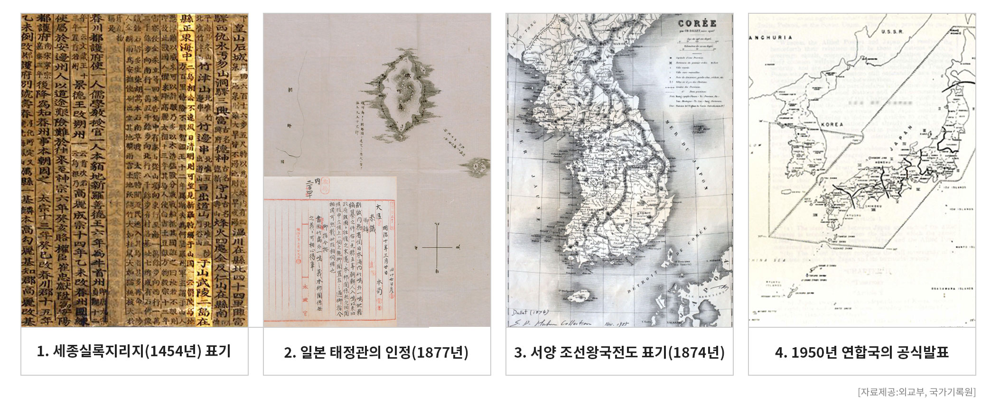

1808년 만기요람은 울릉도와 우산도(독도)가 모두 우산국의 영토라고 기록
1876년 일본 해군성은 독도를 조선의 소속으로 표기
1877년 일본 국가최고기관인 태정관은 독도가 일본의 영토가 아님을 공식적으로 인정
1905년 편입조치를 처음에는 "무주지 선점"이라고 주장했다가 나중에는 "영유의사의 재확인"으로 말을 바꿈
1948년 8월 15일 대한민국 정부가 수립되자 UN결의에 따라 다른 모든 섬들과 함께 한반도 부속도서로서 한국에 반환
2005년 일본 오끼섬에서 발견된 안용복 관련 조사보고서에도 독도를 조선의 섬으로 표기
